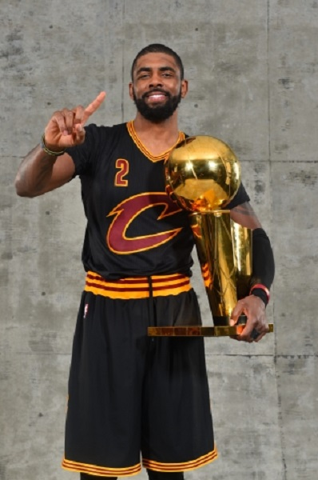
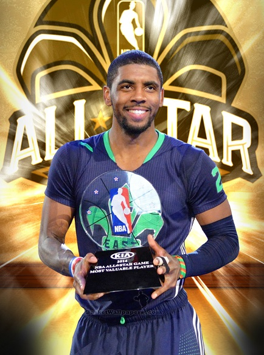
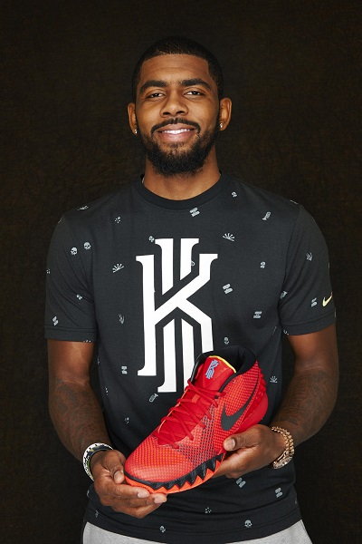

Curry
vs. Irving
is truly a toss up, but Irving
gets a slight edge based on participation points.
Is Curry
just as talented of a ball handler as Irving
?
Probably, but Irving
makes opponents look stupid multiple times per night, every night.
Also, Irving
is a wizard in the paint, and might be the best point guard in the league at finishing in the lane.
He'll show big men the ball and switch his angle at the last second and flip a shot off the glass with gorgeous english, which sets him apart from others on this list.
For those reasons, Irving
is the best ball handler in the NBA
.



NBA Champion 2015/2016 season, 2014 NBA All Star Most Valuable Player Award, 2013 Nike contract private line shoes
Kyrie Irving Is Uncle Drew:
Cavaliers Star Schools Pick-Up Players In Pepsi Max Ad (VIDEO)
It took a few hours for Cavaliers’ rookie Kyrie Irving to suit up, complete with prosthetics and a whole lot of make-up. But the response to this video
suggests it may have been time well spent.
In a new Pepsi ad, the 2011-2012NBA Rookie of the Year stuns a few unsuspecting pick-up players as “Uncle Drew,” an old-school alter ego.
Irving transforms into Uncle Drew, a lethargic old man who pontificates on bask
etball greats like Wilt Chamberlin while lamenting on the “flashy shoes”
of today’s game.
Uncle Drew joins an entourage that follows his “nephew,” Kevin, to a public court in New Jersey where they are purportedly filming a fake documentary
showcasing Kevin’s skills. Things get interesting when one of Kevin’s teammates gets injured during a pick-up game and Kevin asks Uncle Drew to come off
the bench to fill in.
Irving plays reluctant at first as the opposing team and spectators scoff at the substitution. After a few air balls and a lot of heavy panting for good
measure, Irving turns off the act and unleashes a fury of skills while staying in character.
The shock from everyone is palpable and Irving puts on a show, smoking everybody on the court.
After establishing himself as high school hoop star in the Garden State, Irving spent just one season at Duke before being drafted first overall in the
2011 NBA draft. If he decides to make another career move down the road, perhaps he’ll try his hand at acting. After all, it worked for Shaq, didn’t it?
With video out and the song is liked all fans of Kyrie